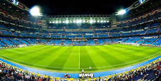

estádio
Escolher o melhor tipo de luzes para campos esportivos deve passar por ter em consideração, não apenas uma solução de curto-prazo, mas deve apontar para um aumento da qualidade das condições de jogo, com melhores níveis de luminosidade, tentando, simultâneamente, que os custos e despesas de electricidade pesem o menos possível no orçamento global.

lance
Você sabia que a canção “É uma partida de futebol” do Skank, na verdade é uma composição de Nando Reis? E o mais legal, é que a amizade e a parceria musical entre eles começou exatamente à beira de um campo de futebol.

jogadores
Meia e meia atacante: O meia, armador ou apoiador, também conhecidos como meia-armador ou meia-de-ligação, é o jogador de futebol que atua principalmente na zona do meio-de-campo, entre a defesa e o ataque, e cuja função é criar as jogadas de ataque.

treino
Para responder o que é função do jogador em campo, a compreensão do que é posição e posicionamento inicial é importante. Posição é o que o jogador responde o que ele é. Podendo ser assim lateral, zagueiro, volante, meia e atacante. ... Função é o papel que o jogador tem de fazer na fase do jogo que lhe é adequado.
partida
Meia: O médio, "meia" ou "centro-campista" é o jogador de futebol que atua principalmente na zona do meio-campo, entre a defesa e o ataque, e cuja função é criar as jogadas ofensivas. Na Argentina, os jogadores que desempenham esta função são chamados de enganche.